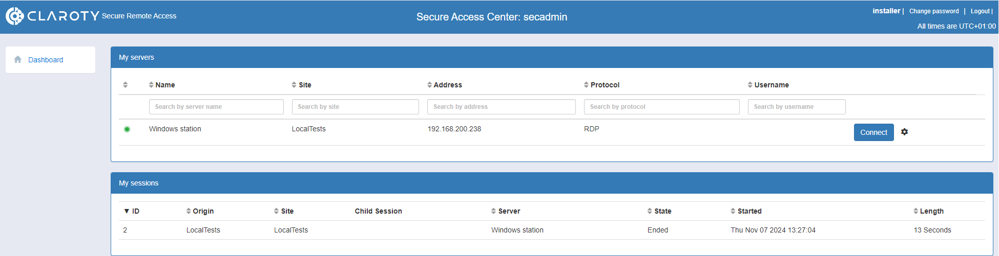
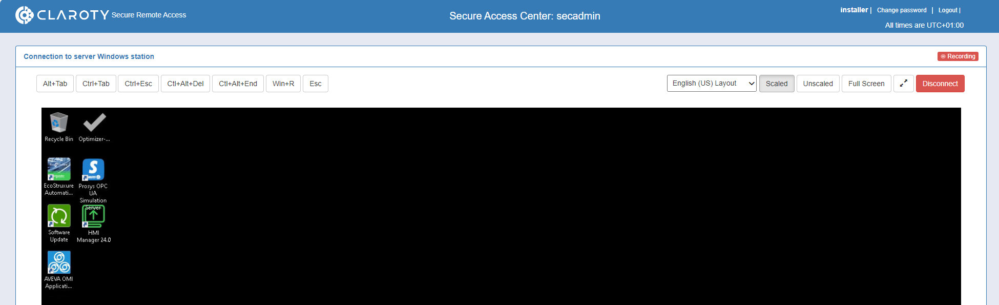
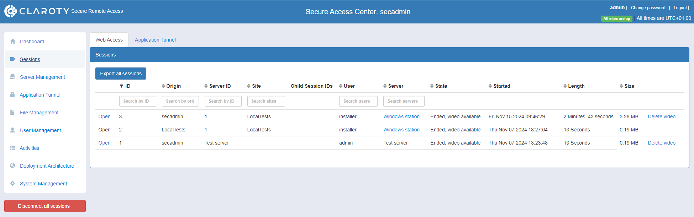

Even if remote desktop service can be used by default in most engineering workstations, it is recommended to take additional steps to secure, monitor and manage all remote connections.
The service of securing remote access solution is managed by one CAP components: Claroty® Secured Remote Access.
The main advantages of Claroty® Secured Remote Access are:
Secure HTTPS connections are enforced.
All remote sessions are denied by default and it is up to the administrator to manage access.
Administrator can manage user permissions to different engineering workstations or sites.
Administrator can manage allowed schedules for remote connections.
Remote sessions can be recorded for all or specific users.
Claroty® Secured Remote Access is composed of two components:
SRA_SAC: It handles secured connections from outside the IT network. It is located at the DMZ Network level. Outside users can only access it through a secured HTTPS connection.
SRA_SITE: It handles all local connections inside the IT network. It is possible to deploy many sites that are located inside the local networks where the engineering workstations are present.
Both components are connected through an encrypted tunnel.
The following images show examples of a remote desktop service on Claroty® Secured Remote Access:
Here is a user dashboard showing all the engineering workstations that the user has access. On the dashboard, these engineering workstations also come with session data and history.

Here is a successful remote connection to a engineering workstation. The connection is done through a web browser to maintain the HTTPS connections and then the enforced security.

Here is an administrator dashboard. It allows to create engineering workstations, add users, access the connections logs and also watch the recordings of previous sessions.
